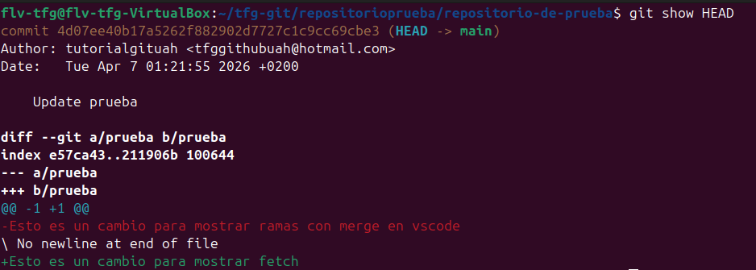

git showSe utiliza para mostrar información detallada sobre un commit específico, incluyendo sus cambios (diff), autor, fecha y mensaje. Es útil para revisar qué cambios se realizaron en un commit en particular.

Dentro de la carpeta ejecutamos lo siguiente:
git show (hash del commit)
Esto mostrará toda la información del commit especificado: autor, fecha, mensaje y todos los cambios realizados en ese commit. Para ver el último commit puedes usar:git show HEAD
Para mostrar el último commit:
git show HEAD
Para mostrar el penúltimo commit:
git show HEAD~1
Para ver solo el diff sin los detalles del commit:
git show --stat (hash)
Para ver los cambios de un archivo específico en un commit:
git show (hash):(ruta del archivo)
Para ver un archivo completo tal como estaba en ese commit:
git show (hash):(ruta del archivo)